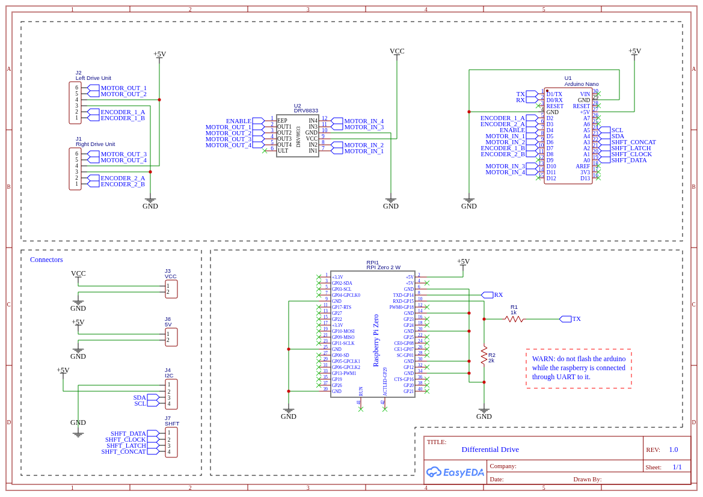
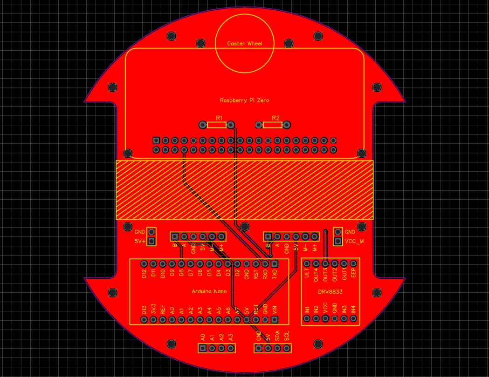
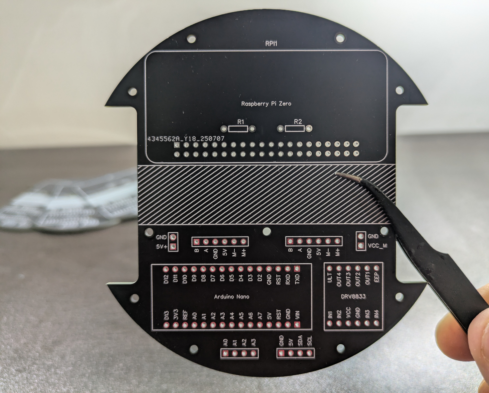
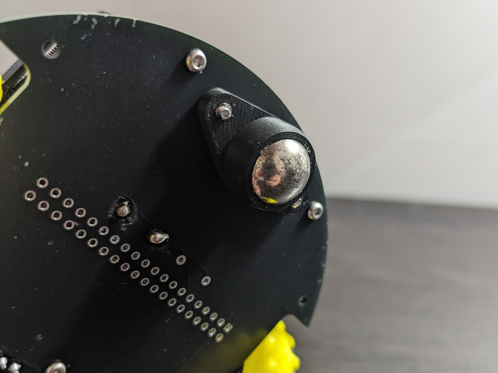
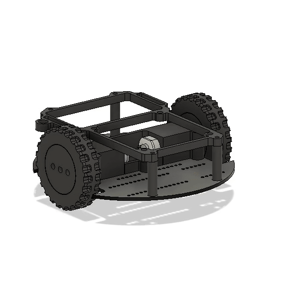
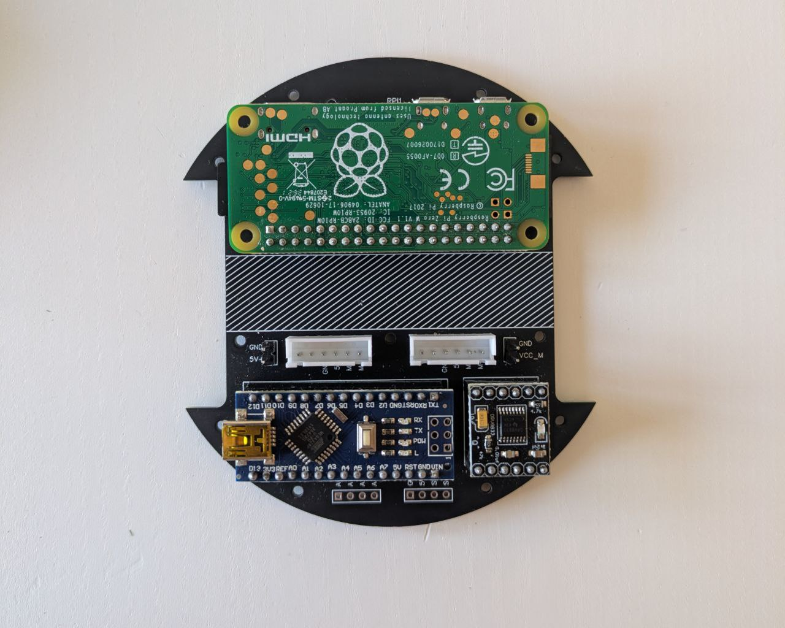
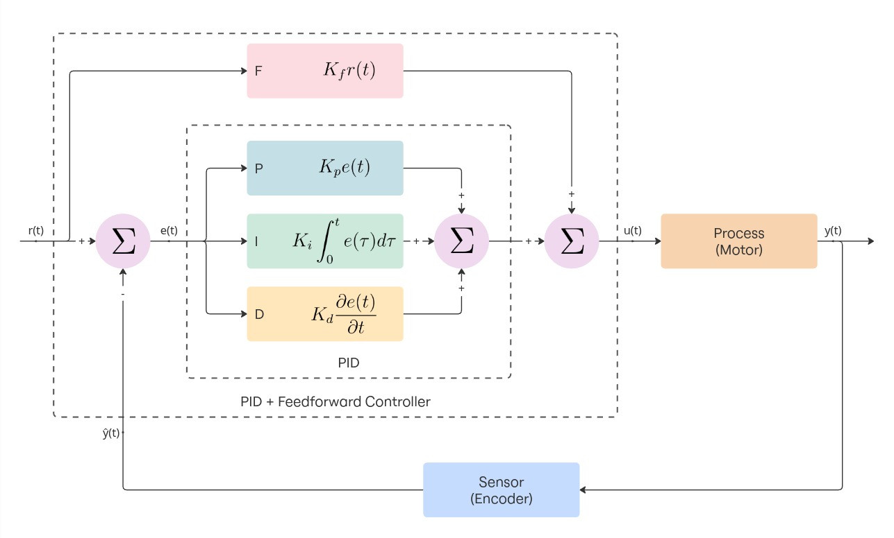
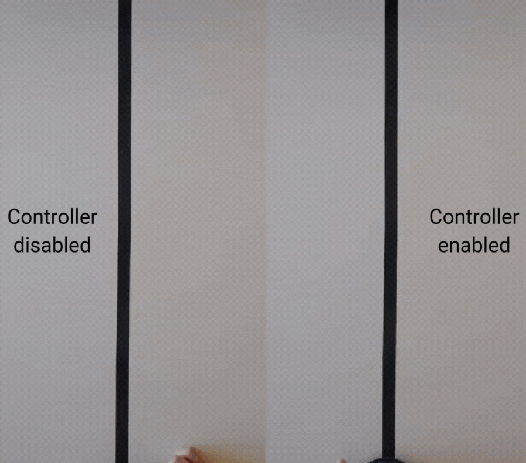

Project Overview
I found myself taking a class in Autonomous and Mobile Robotics, which dealt with `planning and control methods for achieving mobility and autonomy in mobile robots`. I've always been a practical learner and I knew I had to build a robot to really get into the nuts and bolts and to make sense of what I was studying.
I decided to go for the simplest mobile robot I could think of that is still of practical utility: a differential drive robot. It follows the same kinematic model as a unicycle, which is the simplest model that captures meaningful mobility, but it doesn't need additional control to stay upright, having a three-point contact with the ground.
Other considerations:
- I wanted it to be a template for future mobile robots — something modular and easy to upgrade in all of its parts. What if I want to swap the motors for something more powerful, try different encoders or use a different chassis? I designed and built it so that every component could be swapped or upgraded without having to start over and I kept this principle in mind even when writing the software.
- I remember another professor, in a different course, mentioning the fact that good robot design often involves two levels of control: a high-level running heavy but slow stuff — planning, algorithms, communication — and a low-level stage dealing with motor control, sensor reading and everything that needs to happen in near-real time. I wanted to explore this architecture in practice, so my robot uses a Raspberry Pi for the high-level logic (running ROS nodes) and an Arduino for the low-level tasks (keeping the wheels spinning at the right speed, reading encoders and sensors...).
- When designing mobile robots, a central challenge lies in developing control strategies that can deliver reliable and predictable motion despite hardware imperfections. Even two motors from the same manufacturer and production batch may exhibit slightly different behaviors — for example, one might rotate faster than the other under the same voltage input due to small variations in manufacturing. Furthermore, the presence of friction in gears and wheel-ground interaction can introduce disturbances that degrade motion accuracy. Purely open-loop control is insufficient and for this reason I wanted to explore robust feedback control strategies.
This article provides an overview of the project, showing the design process from start to finish.
Hardware

Circuit diagram
The circuit is very simple:
- An Arduino Nano handles the low level stuff (controlling the motors, reading encoders and sensors, ...).
- A Raspberry Pi Zero 2 orchestrates everything. It will receive messages from other ROS nodes and command the Arduino to do something.
- The DRV8833 is an h-bridge. An h-bridge allows a DC motor to be driven in both forward and reverse directions by switching the polarity of the voltage applied to the motor. The DRV8833 in particular supports variable speed both formward and backwards when a PWM signal is used.
- I used two N20 DC motors, rated for 60RPM at 6V. They have a gearbox and a two-phase magnetic encoder. This kind of encoder allows you to compute both the direction and the velocity the motor is spinning, even though we will use just one phase (more on this later).
- UART is used to let the Arduino (low level) and Raspberry (high level) send messages back and forth. The UART is a common serial communication protocol that uses pins VCC, GND, RX (receive data pin) and TX (transmit data pin). The problem in our case is that the Arduino uses 5V logic while the Raspberry Pi uses 3.3V logic. We need the two resistors R1 and R2 to implement a voltage divider that will bring the voltage from the two devices on the same level.
In the schematics you can notice I reserved two 4-pin slots, one with the 5V, GND, SDA, SCL pins and another one with pins from A0 to A3.
- The first slot is used to interface with I2C devices (SDA, SCL) like for example an IMU.
- Pins A0 to A3 can be used for other purposes. In particular, they can be used to control a shift register. I specifically thought about a shift register because one of the things I wanted to experiment with was integrating ToF sensors. The sensors I had work with I2C but the problem is that each of them has the same I2C address. In order to use one of them we need to, enable it (pulling the enable pin high), change address and disable it (pulling the enable pin low) at startup. A shift register would have been just what we need as it lets us control up to 8 new digital outputs. I successfully tested this idea to drive 8 LEDs and I wrote a simple library to interface with the shift register, I'll include it on the github repository even though it is not currently used in the code.
Other components are:
- The Power Supply Unit, the sketchiest of the parts I've used since I didn't find much information about it. It's a ZMR 8A Dual BEC I believe, I ordered it from aliexpress for a few bucks. I took it because it features two independent outputs with a voltage selector. This way we can power the motors at 6V and the other electronics at 5V. I had to remove the top cover and the outer insulation film and to replace the connector and the switch.
- The battery, a 2P 500mAh Lipo. These kind of batteries are usually found in RC planes and cars.
After prototyping I decided to design a PCB. I managed to fit everything onto a disc with a diameter of 10 cm.

PCB

Manufactured PCB
I printed the supports in Matte black PLA from Bambulab and the wheels in TPU to add extra grippyness even though it wasn't as much as I hoped for. I used M2 heat set inserts and screws to mount everything. The wheels are just press fitted and I used an M3 washer on each to separate them from the mounting bracket. Mounting the batteries is always tricky. I often use Velcro to hold them in place.
Another aspect worth mentioning is the caster wheel. I used a simple metal ball that I had lying around (who remembers Geomag?) with a 10mm diameter and I printed a mount that allows it to rotate more or less freely.

Caster wheel
You can find everything you will need to build the robot on this repository:

Below is an exploded view showing the printed parts on the PCB, along with an image of the electronics mounted on it.

Printed parts

Electronics
Control theory
As anticipated, one of the problems is that no motor is exactly the same and we need to compensate for that. Even if you buy two identical motors, one will always spin a little faster, draw a bit more current, or have slightly different friction. Add in battery voltage drops, uneven surfaces, and normal wear over time, and things get worse quickly. We can't just send the same signal to both wheels, the robot will not move straight.
I’ve always been fascinated by warehouse robots (e.g. KIVA/Hercules used by Amazon) and I can only dream of that level of precision. As far as my understanding goes, industrial robots don’t just rely on strong (expensive) hardware. They use multiple layers of control systems to keep the system stable and precise. At least two layers should be used (cascade control): the inner layer make sure each actuator behaves as it should (for example, a motor really spins at the requested speed), while the outer layer focus on higher-level goals, like keeping the robot on a straight path or following a planned trajectory.
I began by developing the inner control layer and I implemented a PID controller to regulate each wheel. It's very simple: each controller continuously computes the difference between the desired speed and the actual speed of the respective wheel (the error), and then calculates a correction to apply to the motor input.
This correction is formed by combining three components, each scaled by a weight:
- Proportional (P): reacts directly to the current error (setpoint - measurement).
- Integral (I): accounts for the accumulated error over time, eliminating steady biases.
- Derivative (D): anticipates the trend of the error, adding stability and damping.
Now, there are better places where to understand how PID works and how to tune it. I'll link a great resource I found:
On top of the feedback action, I also included a feedforward term to each wheel's PID controller. This provides the corresponding motor with an input directly based on the desired speed (a baseline estimate of the control signal for a given RPM). Without feedforward, the motor’s control signal depends only on the error; this means that when a new command arrives and the motor is off, the error is large and the controller blasts a massive command (near 100%), causing the motor to spin up much faster than needed and leading to slower convergence to the setpoint velocity.
Here’s the control architecture of an inner loop. Each wheel has its own identical loop, so both are regulated independently using the same PID+feedforward structure.

Inner control loop
Just by using the inner control loops, with no coordination between the two wheels, I was able to make the robot drive forward in a straight line:

Robot performaces, with and without inner control loops
We can notice two things:
- The robot goes forward in a straight line but eventually small errors accumulate, causing it to drift off track.
- It's a bit difficult to see in the gif but the motion is jerky, the robot moves in a "zig-zag" pattern.
That little zig-zag motion is a classic effect when two wheels are controlled independently. Each wheel’s PID controller only sees its own noisy measurement and reacts locally, so the corrections happen at slightly different times and magnitudes. On top of that, encoder quantization and other unwanted effects make the control inputs jumpy. Those small, asynchronous corrections add up as differential velocity errors, and the result is a wiggly, zig-zag path instead of a perfectly smooth line.
To fix this, I added an outer control layer. TODO

Outer control loop
This was the result:

Robot performaces, outer control loop addition
Software
Below I want to discuss the software architecture.
// Measure encoder ticks from the last time we checked
long currentTicks = _encoder.getTicks();
long tickDelta = currentTicks - _lastTicks;
_lastTicks = currentTicks;
// Compute signed RPM
float direction = (_control >= 0) ? 1.0f : -1.0f;
float ticksPerSec = tickDelta / dt;
float revPerSec = ticksPerSec / _ticksPerRev;
float instantRPM = direction * revPerSec * 60.0f;
// Read linear and angular velocities from UART (format: "linear,angular\n")
if (Serial.available()) {
String input = Serial.readStringUntil('\n');
int commaIndex = input.indexOf(',');
if (commaIndex > 0) {
float linearVel = input.substring(0, commaIndex).toFloat();
float angularVel = input.substring(commaIndex + 1).toFloat();
robot.setVelocity(linearVel, angularVel);
}
}
Improvements
Many improvements could be done. The first that came to my mind was to add an IMU and use it to [...]
Testing and Results
Overall it was a fun little experiment but what I'm most excited about is that I can now devote myself to more complex projects reusing what I learned.